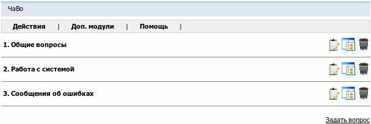

Название
ЧАВО — Часто задаваемые вопросы
О модуле
| Тип | Публичный |
| Можно создать копий | Сколько угодно |
| Присутствует по умолчанию | Нет |
| Можно удалять | Да |

С помощью этого модуля можно создать на сайте страничку часто задаваемых вопросов. На такой странице, кроме списка вопросов и ответов на них посетители смогут отправлять администрации сайта свои вопросы, которые, как им кажется, должны быть в общем списке.
Общие действия для раздела
- →
Создать новую категорию вопросов с указанием ее свойств.
- →
Добавление нового вопроса-ответа с заданием его свойств.
- →
Задание порядка отображения категорий на странице.
Действия над категорией
 Редактировать
РедактироватьИзменение свойств категории.
- Редактировать
Указание точного порядка сортировки вопросов в категории.
 Удалить
УдалитьУдаление пустой категории.
Действия над вопросом
- Редактировать
Изменение свойств вопроса-ответа.
- Удалить
Удаление вопроса-ответа.